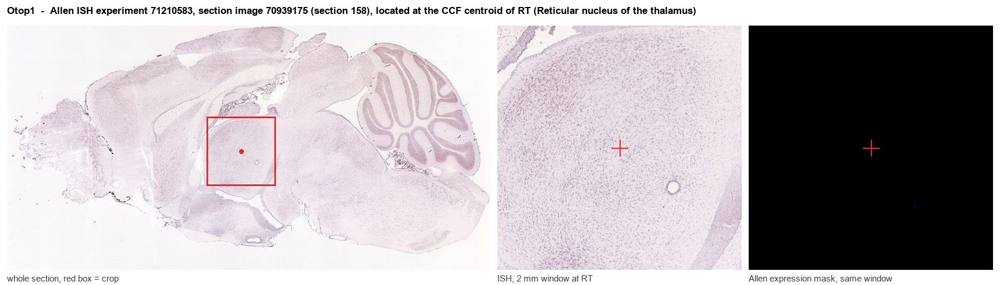
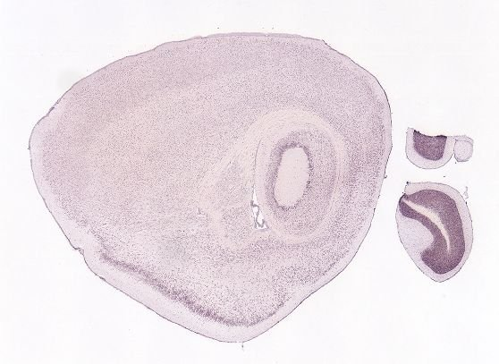
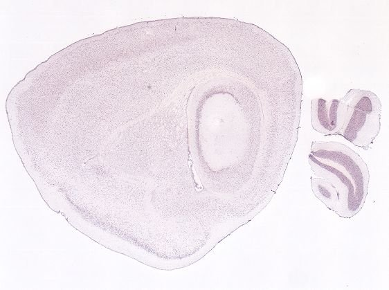
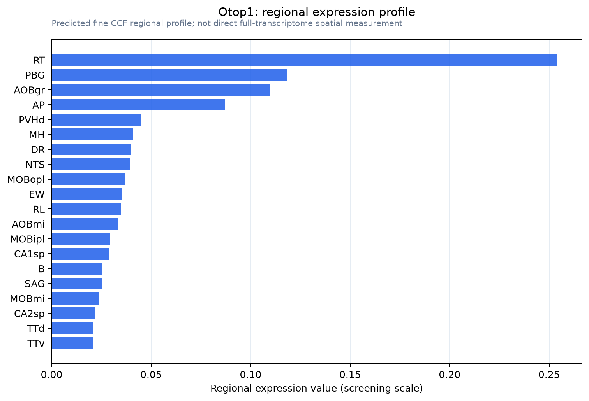

Otop1
Proton channel OTOP1 (Otopetrin-1)
Spatial tier: STRICT_EXCLUSIVE · Class: ION_CHANNEL · Top region: RT (Reticular nucleus of the thalamus) · Positive regions: 4/554
49.9Discovery Score
41.0Targetability Score
CEvidence grade C
What this means: Otop1: predicted fine-region profile is strict-exclusive, with 4 positive regions out of 554 (limit 12); direct spatial validation is required.
Function in RT: evidence, prediction, innovation
- Gene function
- Otop1 encodes otopetrin-1, founder of a proton-selective ion channel family: H+ influx in acid, efflux in alkali, blocked by Zn2+. It transduces sour taste in type III taste cells and the taste of ammonium chloride, and is required for otoconia formation, tilted/mergulhador mutants lacking otoconia and being vestibular-deficient.
- Region function
- The reticular thalamic nucleus is the GABAergic gate around dorsal thalamus, source of sleep spindles and state-dependent filtering of thalamocortical traffic.
- Published in this region
- inferred No region-specific literature found. PubMed queries for Otop1 in brain return only taste, otolith and heterologous-expression studies, the closest central link being the sour-taste pathway from Otop1-positive type III taste cells to brainstem relays (Zhang et al. 2019), with no Otop1 reported in thalamus.
- Predicted function
- Prediction: in RT neurons Otop1 would be a pH-gated proton conductance reading acidification, which in thalamus swings with burst firing, spindles and sleep hypercapnia. Loss should slow pH recovery after burst trains and alter T-type-dependent burst duration, seen as changed spindle frequency or duration and altered arousal from hypercapnic challenge.
- Innovation
- ★★★★★ 5/5 Otop1 is studied only in taste buds and otoconia, so a thalamic proton channel would link brain pH to sleep rhythms.
- Tools
- Otop1 tilted (tlt) and mergulhador mutants and knockout mice; Zn2+ as acute blocker; structure-guided small-molecule OTOP1 inhibitors; heterologous proton-current assays. RT cells are targeted with Pvalb-Cre, Sst-Cre and Vgat-Cre.
- References
Direct evidence located at the region

Allen ISH experiment 71210583, section image 70939175 (section 158): the section that contains the CCF centroid of Reticular nucleus of the thalamus according to the Allen image-to-atlas alignment (reference_to_image), with a 2 mm window around that point. Left: whole section, red box = window. Middle: ISH signal. Right: Allen's expression-mask view of the same window. open this image in the Allen viewer
Look it up yourself: Allen Mouse Brain ISH for Otop1Allen reference atlas: RT (structure 262)ABC Atlas MERFISH viewer(in the ABC Atlas choose dataset MERFISH-C57BL6J-638850-CCF, colour cells by gene "Otop1" or by parcellation_substructure "RT")All genes confined to RT + 3-D brain
Direct spatial evidence
MERFISH REGION LOCATOR

DIRECT ALLEN ISH

DIRECT ALLEN ISH

Regional expression figure

Predicted WMB × fine-CCF profile; not direct full-transcriptome spatial measurement.
Spatial profile
Evidence and specificity
- Evidence status
- PREDICTED_FINE
- Direct sources
- None; predicted localization only
- Exclusive threshold
- 12 positive regions out of 554
- Spatial specificity
- 0.427
- Top-region fraction
- 0.206
- Filter status
- PASS
Interpretation limits
- Cell-type-to-region projection is imputed expression, not direct spatial measurement.
- Adult reference atlases do not establish stability across age, sex, strain, state, or disease.
- Transcript abundance does not guarantee protein abundance or genetic-tool performance.